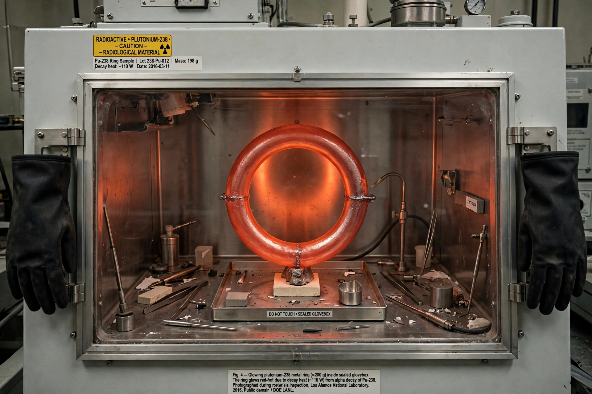

Plutonium
From Wikipedia, the free encyclopedia

Plutonium is a radioactive chemical element with the symbol Pu and atomic number 94 — an actinide metal, silvery when fresh and tarnishing to dull grey, produced in nuclear reactors by neutron capture in uranium-238. Its isotope plutonium-239 is fissile and is the primary material of nuclear weapons (the Fat Man bomb used a plutonium core); plutonium-238's decay heat powers deep-space missions (Voyager, Cassini, Perseverance's RTG). It is among the most toxic and politically charged substances known.
Discovery and production
Plutonium was first produced and isolated in 1940–41 at Berkeley by Glenn Seaborg's team (named for Pluto, following uranium/Neptune), kept secret as a wartime material, and manufactured at Hanford for the Manhattan Project. Reactor-grade plutonium (mixed isotopes) accumulates in spent fuel worldwide — some 500+ tonnes of separated and unseparated stocks — driving reprocessing, MOX fuel and proliferation debates.
Properties and hazards
The metal has six allotropes with wild density swings (the δ-phase contracts on heating), making machining an art; gallium stabilises weapon cores. Alpha-emitting plutonium is chiefly dangerous inhaled or ingested (bone- and liver-seeking), with a biological half-life of decades; its chemical toxicity rivals its radiological hazard in popular reputation, though specialists argue radiotoxicity dominates. Criticality accidents (the 1945–46 'demon core') killed two physicists at Los Alamos.